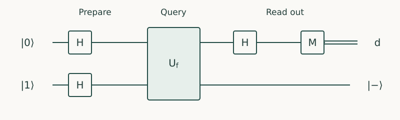

Quantum Algorithms · Chapter 1 · Draft lesson
Quantum Algorithmic Thinking
How do we turn a computational problem into a quantum procedure whose answer can actually be read?
Chapter direction
Starting point: Quantum Computing: amplitudes, circuits, measurement, reversible oracles, and elementary search.
Anchor example: Revisit Deutsch’s problem as a design exercise: identify the required property, explain why immediate measurement fails, and construct the interference that reveals the answer.
This lesson includes explanations, worked examples, and problems with solutions. Advanced results whose proofs are outside the chapter are identified explicitly.
1.1 Defining the Problem
Imagine a device with one input switch and one output lamp. Its behavior is fixed, but hidden: for input \(x\), the lamp displays a bit \(f(x)\). You need to determine whether the two switch positions produce the same output. You do not need to reconstruct the device. You need one property of its behavior.
This distinction will guide the course. A quantum algorithm succeeds when it makes the requested property observable. Merely placing many possible inputs in a superposition does not accomplish that.
1.1.1 Inputs, promises, and desired outputs
Write the required answer as \(d=f(0)\oplus f(1)\), where \(\oplus\) means addition modulo two. Thus \(d=0\) means the outputs agree and \(d=1\) means they differ. There are four possible devices:
| \(f(0)\) | \(f(1)\) | Required answer \(d\) |
|---|---|---|
| 0 | 0 | 0 |
| 0 | 1 | 1 |
| 1 | 0 | 1 |
| 1 | 1 | 0 |
A classical procedure can inspect both outputs and compare them. One inspection cannot give an exact answer: after seeing \(f(0)=0\), for example, both the first and second rows remain possible. The missing value changes the answer. The same argument works for either first input and either observed output.
Our success criterion is exact correctness for every row. Later problems may permit an error probability, but that permission must be stated before comparing methods. A promise restricts which inputs can occur. No extra promise is needed here; every one-bit Boolean function has either equal or unequal outputs. For larger domains, “constant or balanced” is a genuine restriction.
1.1.2 Decision, search, estimation, and sampling
Deutsch’s task is a decision problem: return one bit. A search task would ask for an input \(x\) satisfying a condition. An estimation task might ask for the fraction of inputs whose output is one, within a specified error. A sampling task asks for a draw from a specified distribution. These demands can require very different amounts of information.
For example, estimating a fraction to within \(0.1\) does not require printing every successful input. Conversely, an algorithm producing one successful input has not supplied the entire list. Throughout this book, specify what the user receives: a bit, a string, an estimate, a sample, or a quantum state intended for another computation.
Prediction. If the device’s two outputs are supplied explicitly as an ordinary two-bit string, does the preceding argument establish a quantum advantage?
Worked answer
No. The argument concerns access through queries to an unknown device. With an explicit string, the costs of reading, encoding, and processing that string form a different problem. An access assumption is part of the claim, not an implementation detail.
1.2 Specifying Access
1.2.1 Classical data, quantum states, and oracles
A quantum query requires more than a classical switch and lamp. Assume access to the coherent operation
\[U_f\ket{x}\ket{y}=\ket{x}\ket{y\oplus f(x)}.\]
The first register selects the input; the second is a target. The operation preserves the input and toggles the target when \(f(x)=1\). Applying it twice restores both registers, so \(U_f^{-1}=U_f\). Its action on superpositions follows by linearity. This equation defines the oracle offered in the problem; it is not a claim that any laboratory device automatically supports coherent queries.
Prepare the input in \(\ket{+}=(\ket0+\ket1)/\sqrt2\) and the target in \(\ket0\). A query gives
\[\frac{\ket0\ket{f(0)}+\ket1\ket{f(1)}}{\sqrt2}.\]
A measurement of both registers yields one input-output pair, each input with probability one half. It does not reveal the table of both outputs. The two branches are present in the description of the state; extracting a useful relationship requires another operation.
1.2.2 Available operations and hidden preparation costs
We will count one application of \(U_f\) as one query. We must also count gates outside it, qubits, and measurements. When \(f\) is supplied as code, its reversible implementation has a cost too. A box labeled \(U_f\) can contain a large circuit.
Three common inputs therefore need separate treatment. A classical table must be accessed by a specified data-loading procedure. A supplied quantum state can be processed, but its preparation circuit need not be known. A callable unitary comes with a particular input-output contract. Possessing one of these does not automatically provide the others.
In particular, a single copy of \(\ket\psi\) is not a circuit that prepares arbitrarily many copies. Nor does access to an unspecified unitary automatically include its inverse or a controlled version. We will state these capabilities whenever a construction uses them.
1.3 Designing Interference
1.3.1 Encoding the property that matters
We want the two values to meet in one amplitude so that their agreement or disagreement changes an output probability. Instead of storing each value in a different target state, prepare the target in \(\ket{-}=(\ket0-\ket1)/\sqrt2\). Flipping this state changes only its sign: \(X\ket{-}=-\ket{-}\). Therefore
\[U_f\ket{x}\ket{-}=(-1)^{f(x)}\ket{x}\ket{-}.\]
The target is now the same state in both branches. The function values appear as signs on the input amplitudes. After a query on \(\ket+\ket-\), the input register is
\[\frac{(-1)^{f(0)}\ket0+(-1)^{f(1)}\ket1}{\sqrt2}.\]
Apply a Hadamard to this register. Using \(H\ket0=(\ket0+\ket1)/\sqrt2\) and \(H\ket1=(\ket0-\ket1)/\sqrt2\), its state becomes
\[\frac{(-1)^{f(0)}+(-1)^{f(1)}}2\ket0+\frac{(-1)^{f(0)}-(-1)^{f(1)}}2\ket1.\]
If the values agree, the amplitude of \(\ket1\) vanishes. If they differ, the amplitude of \(\ket0\) vanishes. We have arranged addition and subtraction so that the requested relationship determines which outcome survives.

The circuit starts from \(\ket0\ket1\). The first two Hadamards prepare \(\ket+\ket-\). The target remains \(\ket-\) and need not be measured. Register order throughout is input, then target.
1.3.2 Removing records that prevent cancellation
Why did we choose that target? Return to the unsuccessful preparation \(\ket+\ket0\), and choose \(f(x)=x\). The query produces \((\ket{00}+\ket{11})/\sqrt2\). Applying a Hadamard to the first qubit gives
\[\frac{\ket{00}+\ket{10}+\ket{01}-\ket{11}}2.\]
The probability of first-qubit outcome zero is \(1/4+1/4=1/2\); the probability of one is also one half. The minus sign at \(\ket{11}\) cannot cancel the amplitude at \(\ket{10}\): they are different complete states. The target still records which input branch occurred.
Not looking at a record does not erase it. The successful construction avoids creating a distinguishing target record at all. In larger algorithms a temporary record may be unavoidable; Chapter 2 shows how to remove it reversibly before it obstructs later interference.
1.4 Constructing the Readout
1.4.1 Distinguishable answers and measurement
Before the final Hadamard, the useful distinction is between \(\ket+\) and \(\ket-\). Both give a fair coin in the computational basis. Their inner product is zero, however, so a measurement in the appropriate basis can distinguish them exactly. The Hadamard converts that basis into the computational basis: \(H\ket+=\ket0\) and \(H\ket-=\ket1\).
The complete output is
\[(-1)^{f(0)}\ket{d}\ket{-},\qquad d=f(0)\oplus f(1).\]
The remaining sign is a global phase and cannot change any measurement probability. Consequently the circuit distinguishes the two classes of functions but does not distinguish the two functions within each class. That loss of accessible detail is consistent with our chosen output.
1.4.2 Success probability, precision, and repetition
This ideal circuit succeeds with probability one. Other algorithms give a correct answer with a known lower probability. Independent repetitions can help, but the readout procedure must say how results are combined. For a decision algorithm with success at least \(3/4\) on every input, majority vote over three independent runs succeeds with probability at least
\[\left(\frac34\right)^3+3\left(\frac34\right)^2\frac14=\frac{27}{32}.\]
This improvement costs three executions. Independence requires fresh preparations and independently sampled runs; repeating a correlated failure need not help.
For estimation, if a measured bit has probability \(p\) of being one, the average of \(R\) independent results has mean \(p\) and variance \(p(1-p)/R\leq1/(4R)\). Variance is the expected squared deviation from the mean. On runs where the error exceeds \(\epsilon\), that squared deviation exceeds \(\epsilon^2\); hence their probability is at most \(1/(4R\epsilon^2)\). This elementary bound already explains why precision and confidence belong in the resource count. It is a sufficient bound, not the best possible one.
Problem. A procedure finds a valid answer with probability \(p\), and validity can be checked. What is the probability of finding at least one valid answer in \(R\) independent trials?
Worked solution
Every trial fails with probability \(1-p\). Independence makes the probability that all fail equal to \((1-p)^R\). The required probability is \(1-(1-p)^R\). Verification must be counted; without a way to recognize success, repeating a search procedure does not by itself identify which returned answer to trust.
1.5 Establishing an Advantage
1.5.1 Correctness for a family of inputs
Substituting the four rows of the table into the final state gives, respectively, \(\ket0\ket-\), \(\ket1\ket-\), \(-\ket1\ket-\), and \(-\ket0\ket-\). This verifies the entire small instance family. The formula in Section 1.3 explains why the result follows, rather than merely reporting four tests.
There is no growing input size here. The one-query result teaches a design principle; it does not by itself establish an asymptotic speedup. For a scalable claim, define a family indexed by size \(n\), prove correctness for all allowed inputs, and determine how costs grow with \(n\) and the requested accuracy. Chapter 3 will apply phase encoding to a hidden string of arbitrary length.
1.5.2 Classical baselines and complete resource costs
For exact Deutsch decision, the classical worst-case query cost is two and the quantum cost is one under the stated coherent oracle access. Exact randomized classical computation cannot escape the missing-value argument either: a run that has inspected only one value cannot certify which of its two compatible functions was supplied.
| Resource | Cost or assumption |
|---|---|
| Queries | One application of \(U_f\) |
| Working qubits | Two, excluding any implementation workspace inside the oracle |
| Other gates | Three Hadamards; also one X if both qubits start in zero |
| Readout | One computational-basis measurement |
| Repetitions | One in the ideal exact model |
| Oracle construction | Not included in the query count; must be charged for a concrete implementation |
This is a query advantage, not a measured runtime advantage on a physical processor. A fair runtime comparison would include preparation, oracle implementation, gates, measurements, and classical processing on both sides. A fair approximate comparison would give both methods the same permitted error.
Problem. Explain why no classical one-query randomized algorithm can succeed with probability greater than one half on every Deutsch input.
Worked solution
Choose the four functions uniformly at random. Fix the algorithm’s internal random choices. Whichever input it queries, the unqueried function value is still a fair independent bit. Its desired XOR is therefore fair even after the observed answer. Any output rule succeeds on average with probability one half. Averaging also over the algorithm’s random choices preserves that average, so at least one of the four inputs has success at most one half. Random guessing attains one half on every input.
1.6 Combining Techniques
1.6.1 Deutsch’s algorithm as a design case study
The decisive choice was the encoding. We needed the XOR of two values, so we encoded those values as signs and made the signed amplitudes meet. Preparing the target in \(\ket-\) ensured that the oracle changed a relative phase without leaving a distinguishing record. The final Hadamard then converted the phase relation into a classical bit.
The exact one-query presentation used here is discussed in Cleve, Ekert, Macchiavello, and Mosca, Quantum Algorithms Revisited. Our emphasis is on the decisions that make the circuit work: the requested property, the oracle contract, the target state, and the measurement basis.
Problem. Replace the oracle target \(\ket-\) by \(\ket+\), keeping the rest of the circuit. Predict the output for every function.
Worked solution
Since \(X\ket+=\ket+\), the oracle leaves \(\ket+\ket+\) unchanged for every \(f\). The final Hadamard maps the input to zero, so the circuit always reports zero. It succeeds for constant functions and fails for unequal outputs. Coherent access alone is insufficient; the target must respond to the oracle in the useful way.
1.6.2 From reusable constructions to new algorithms
For a new problem, first ask what must be learned and what operations the input representation permits. Then look for an encoding whose amplitudes or phases depend on that property. Determine which branches must interfere and remove any records that distinguish them. Work backward from a measurement that would reveal the answer. Finally prove the resulting output probabilities and account for all required resources.
These questions connect the techniques in this course. Coherent computation supplies clean subroutines. Phase encoding turns values into relative phases. Fourier methods resolve structured phase patterns. Amplification increases the chance of a recognizable success. Later methods organize these operations around graphs, encoded matrices, controlled evolution, or feedback.
Our next obstacle is already visible: a realistic function evaluation generally needs scratch space. If that space remembers the input, the elegant two-branch cancellation can fail. We next construct function evaluation that leaves precisely the intended output and restores its temporary storage.